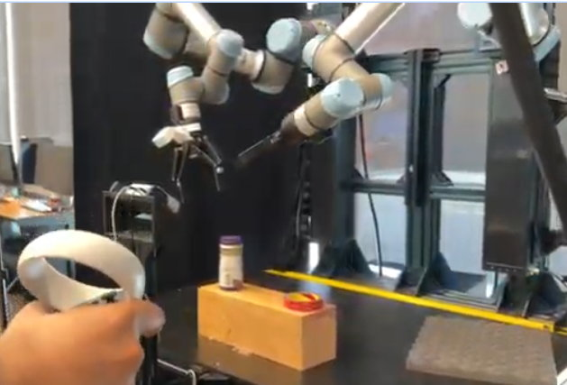

Teaching Two Robot Arms to Lay Up Carbon Fiber
WEIRD Lab, University of Washington · Robot Learning Researcher · Jan 2026 – present

Why this task resists conventional automation
Composite layup — pressing a ply of carbon fiber prepreg into a mold so it conforms without wrinkling — is still done by hand in most of aerospace. The reason is that it is a contact-rich, compliant-material task with no clean state representation. The ply deforms as you touch it, so its shape at any moment is a function of the entire history of contact applied to it. A technician succeeds by modulating force against felt resistance, and cannot articulate the policy they are executing.
That combination defeats the two usual approaches. You cannot script a trajectory, because the correct motion depends on how the material has already deformed. And you cannot easily write a reward function, because "did this wrinkle" is a property of the finished surface, not of any instantaneous state. It is a good task for imitation learning, and a good argument for why physical intelligence needs both hardware and policy work in the same pair of hands.
System architecture
Two UR5e arms, each with a distinct job. The split is the core design decision of the system: it separates doing the task from measuring whether the task went well, so that quality measurement is a first-class, automated part of the loop rather than a human stepping in between episodes.
| Right arm — execution | UR5e (6 DoF) mounted on a vertical translational rail, giving a 7th DoF when the task needs the extra reach or a better approach angle. Runs the learned manipulation policy under impedance-style control. |
|---|---|
| Left arm — evaluation | Carries a laser profilometer. Scans the laid-up surface to detect and quantify wrinkle formation, producing an objective quality measurement per episode. |
| Force sensing | UR5e flange-mounted force/torque sensor — contact force is measured at the wrist, where the tool actually meets the ply. |
| Policy stack | ACT (action chunking) and Diffusion Policy (Chi et al.), implemented through Hugging Face LeRobot. |
| Teleoperation | GELLO-style leader arm for task-space demonstration collection. |
| Runtime | ROS2 on Linux, coordinating both arms, the profilometer, and the teleoperation rig. |
| Dataset | 500+ teleoperated demonstrations spanning multiple tools, carbon fiber strip sizes, and mold shapes. |
End-effector design
The primary end-effector is modeled on the hand tool a technician actually uses to lay up composite — not on a generic gripper. That choice is deliberate: the human tool geometry already encodes decades of process knowledge about how to distribute pressure into a ply without distorting it. Starting from a gripper would mean rediscovering that through trial and error, and it would also break the correspondence between what the demonstrator does and what the robot can do — which is exactly the correspondence imitation learning depends on.
A custom roller tool is also in development, for the parts of the task where a rolling contact distributes force better than a pressing one. Part of what the 500+ demonstration set varies is which tool is in the hand, so the policy sees the task rather than one specific implement.
I design and fabricate the end-effector subsystems, fixtures, and assembly tooling for both arms in SolidWorks, validated through structured closed-loop hardware test cycles against stiffness, weight, and repeatability targets.
Collecting demonstrations
Demonstrations are collected through a GELLO-style leader arm in task space. I evaluated VR controller teleoperation and found it unsuitable here: this task is defined by fine force modulation against a surface, and the demonstration interface has to preserve that fidelity or the data does not contain the thing the policy needs to learn.
The dataset is now 500+ demonstrations, deliberately varied across three axes — tool, carbon fiber strip size, and mold shape. The variation is the point. A policy trained on one strip on one mold learns that specific trajectory; varying the geometry forces it toward the underlying strategy, and it is what makes the evaluation meaningful when a new mold shows up.
Why Diffusion Policy wins on this task
I trained both ACT and Diffusion Policy on the same demonstration set. Diffusion Policy clearly wins, and the reason is multimodality.
There is rarely one correct way to lay a strip down. A human might work from the center outward or from one edge across; both succeed, and both appear in the data for the same observation. A policy that regresses to a single action — as ACT tends to under this kind of conflict — averages the two valid strategies together and produces a third one that is not valid at all. Diffusion Policy models the action distribution instead of its mean, so it can represent "either of these" and commit to one, rather than splitting the difference.
This is precisely the regime where the multimodality argument for diffusion policies stops being theoretical: with 500+ demonstrations collected across varied tools and geometries by a human who does not execute the task identically twice, conflicting-but-valid actions for similar observations are the norm rather than an edge case.
Control: impedance, not position
Commanding position into a contact task means the arm will happily drive through the ply and the mold to reach a setpoint. Impedance control instead specifies the relationship between deviation and force — the arm behaves like a programmable spring-damper — so contact is bounded by construction and the policy can command "press toward the mold" without knowing the exact mold geometry.
For the GELLO teleoperation path I run a custom impedance-like PD controller, adapted from a colleague's implementation and reworked for this task. This is not incidental plumbing: the task demands precise force control and dexterous manipulation simultaneously, and the controller is what determines whether the demonstrations contain usable force information or just position traces with contact noise on top.
Current work: control on a curved surface
The system is moving from a Euclidean workspace to operating directly on the curved (non-Euclidean) surface of the mold, and I am implementing the impedance controller for that space.
The motivation: standard impedance control defines stiffness along fixed world axes, but those axes are meaningless to this task. What matters is the surface's own frame — moving along the mold versus pressing into it. On a curved mold those directions change continuously with position, so a controller in world coordinates has to keep re-deriving them and gets the decomposition subtly wrong wherever the curvature changes.
The new controller decomposes the command in the surface frame instead: tangential motion as twist commands along the surface, separated from force along the normal axis. That gives one channel for "where to move on the ply" and an independent one for "how hard to press," regardless of the mold's shape — which both simplifies what the policy has to output and makes the same policy transfer across mold geometries rather than relearning each one.
Evaluation: what the profilometer measures
Evaluation runs as closed-loop rollouts on the real hardware, scored by the profilometer arm rather than by held-out action prediction error — action-space loss on a validation set does not tell you whether a ply wrinkled.
The metric set is still being refined. The three quantities I am working toward, because together they distinguish failure modes that a single number would conflate:
- Defect area — the total surface area affected by wrinkling. Captures how much of the ply went wrong.
- Peak height difference — local deviation at each wrinkle. Captures how severe a given defect is; a small area at high amplitude can be worse than a large shallow one.
- Wrinkle count by region — how many distinct defects, and where. Distinguishes one systematic problem from many scattered ones, which points at different causes — a policy error versus a tooling or material error.
Toward reward from sensing
The direction this enables is DSRL infrastructure using profilometer feedback as a learned reward signal. Wrinkle measurement is already an automated, physical, objective quantity — which makes this one of the rare contact-rich manipulation tasks where the reward does not have to be hand-designed or human-labeled. That turns the evaluation arm from a measurement device into a training signal, and lets the system improve past the quality of the demonstrations it was given.
Status
Research in preparation for publication: Bimanual robotic composite layup with learned manipulation policies and profilometric quality evaluation. Quantitative policy performance results are pending.